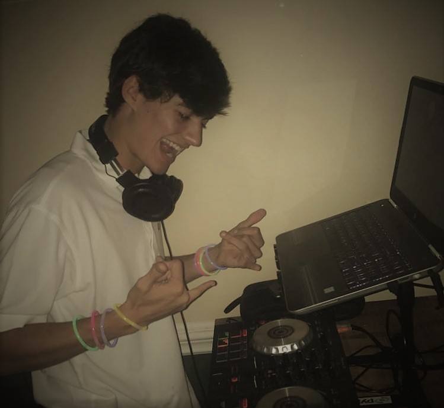

| Show | Date | Location | Time |
|---|---|---|---|
| Thursday Night Show | 11/9/2017 | Woodford | 12:30am |
| Gator Weekend | 11/17/17 | 990 South Milledge | 12:00am |
| New Years Party | 1/01/18 | TBD | 12:00am |

I am a DJ who specializes in Trap and Future Bass remixes of popular songs. Currently, I live in Athens, as I am a student at the University of Georgia, but I was raised in Atlanta. I hope one day to expand my horizons by playing at clubs in Atlanta where I will be able to truly play my favorite styles of EDM.
The songs and remixes that I create pull from a variety of influences including Louis the Child, Porter Robinson, RL Grime, and Flume. My goal is to not be limited by one genre in my work and explore different realms of sound. Some of my favorite artists currently are Quix, Krane, and Graves.
For all performance related questions please contact: booking.willmaclane@gmail.com
Typical booking rates are as follows: